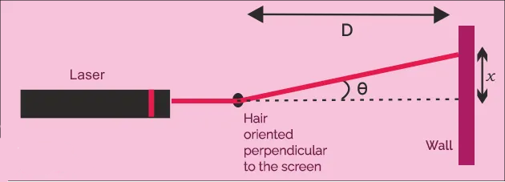

Aim
The aim of this experiment is to estimate the width of a wire by analyzing the diffraction pattern generated from it.
Apparatus
Laser
Slit Film
Screen
Physics of the Experiment
The main physics behind the experiment can be summarized as:
- Young’s double-slit experiment uses two coherent sources of light placed at a small distance apart, usually, only a few orders of magnitude greater than the wavelength of light is used.
- Two coherent light sources can be created by splitting the single light source in two with the help of a thin wire
- Since the wire acts as the slit separator, it's width is an important factor which determines the spread of the diffraction pattern.
- The width of the wire can then be estimated using the formula described below.
- The original Young’s double-slit experiment used diffracted light from a single source passed into two more slits to be used as coherent sources.
Lasers are commonly used as coherent sources in the modern-day experiments.
Formulas Used
- y_m = m * (D * λ / wire_width)
- here y_m is the position of the m-th minima (m-th dark fringe) from the central maxima (brightest fringe at the centre of the pattern).
- D is the separation of the slit from the Screen, wire_width is the estimated width of the wire. λ is the wavelength of the light source.
- m is an integer
